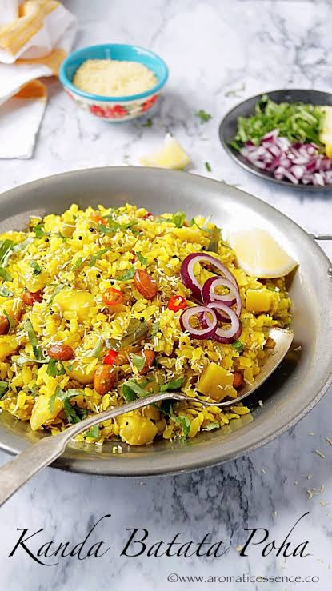

Poha is flattened rice flakes and a popular South Asian savory breakfast dish made by steaming and sautéing the flakes with mustard seeds, turmeric, onions, and green chilies. It is light, fast to cook, and naturally gluten-free.
Back to all recipes page